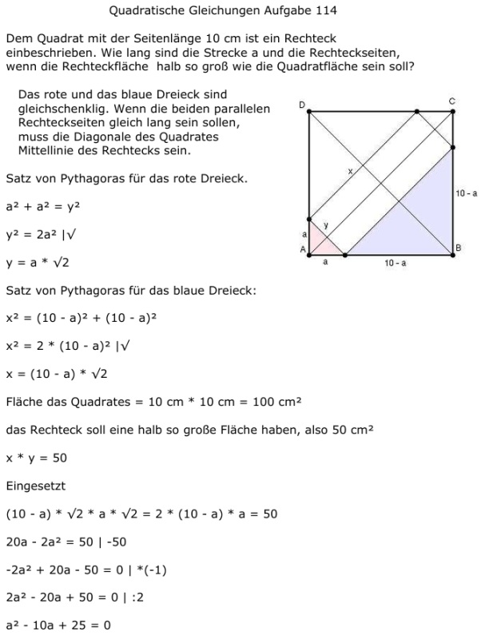

Aufgabe 114 Dem Quadrat mit der Seitenlänge 10 cm ist ein Rechteck einbeschrieben. Wie lang sind die Strecke a und die Rechteckseiten, wenn die Rechteckfläche halb so groß wie die Quadratfläche sein soll?  Das rote und das blaue Dreieck sind gleichschenklig. Wenn die beiden parallelen Rechteckseiten gleich lang sein sollen, muss die Diagonale des Quadrates Mittellinie des Rechtecks sein. Satz von Pythagoras für das rote Dreieck. a2 + a2 = y2 y2 = 2a2 |√ y = a * √2 Satz von Pythagoras für das blaue Dreieck: x2 = (10 - a)2 + (10 - a)2 x2 = 2 * (10 - a)2 |√ x = (10 - a) * √2 Fläche das Quadrates = 10 cm * 10 cm = 100 cm2 das Rechteck soll eine halb so große Fläche haben, also 50 cm2 x * y = 50 Eingesetzt (10 - a) * √2 * a * √2 = 2 * (10 - a) * a = 50 20a - 2a2 = 50 | -50 -2a2 + 20a - 50 = 0 | *(-1) 2a2 - 20a + 50 = 0 | :2 a2 - 10a + 25 = 0 p, q - Formel p = -10 ; q = 25 a1,2 = 5 y = 5 * √2 = 7,1 cm x = (10 - 5) * √2 = 5 * √2 = 7,1 cm Das halb so große einbeschriebene Rechteck ist ein Quadrat.